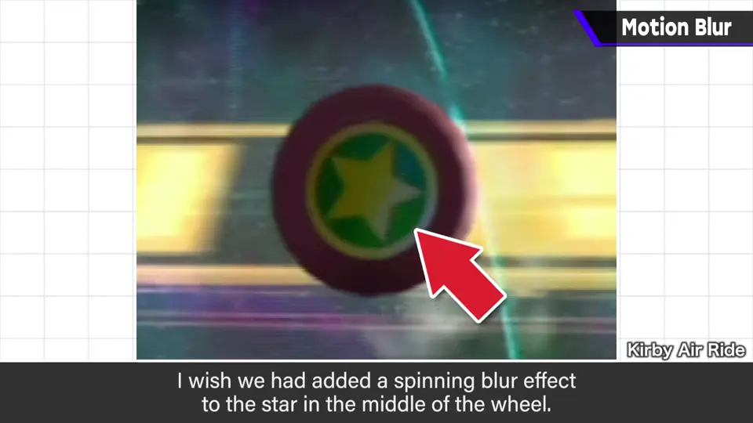
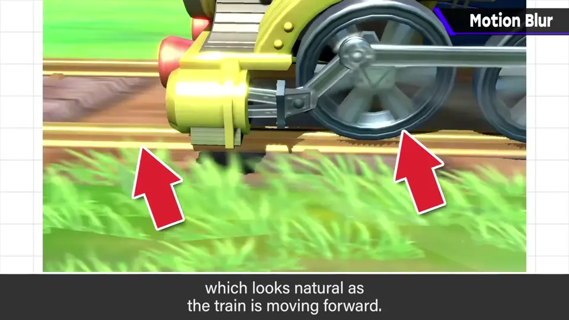
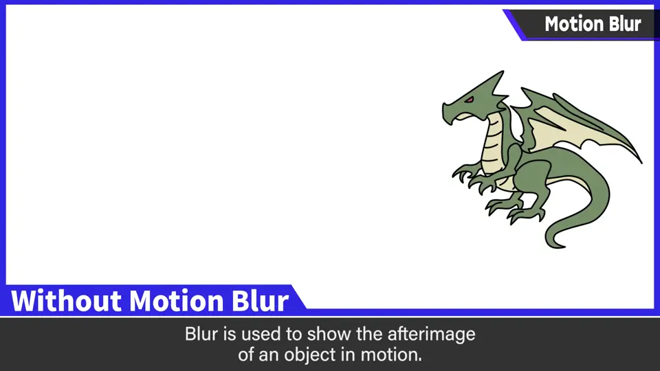
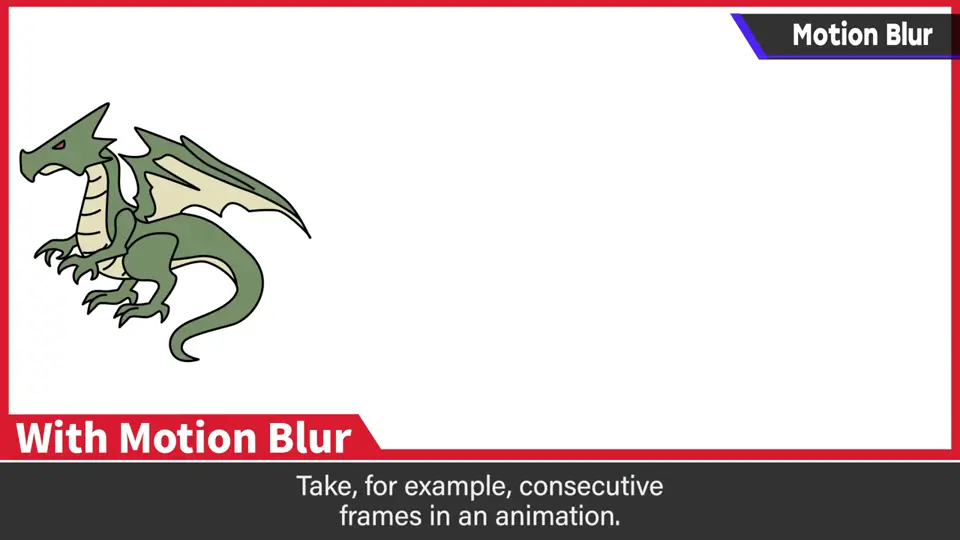
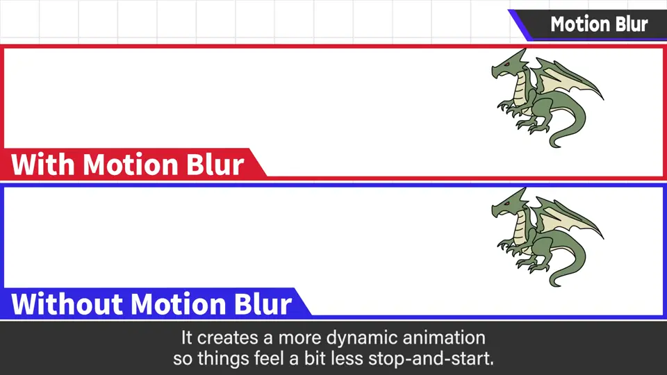
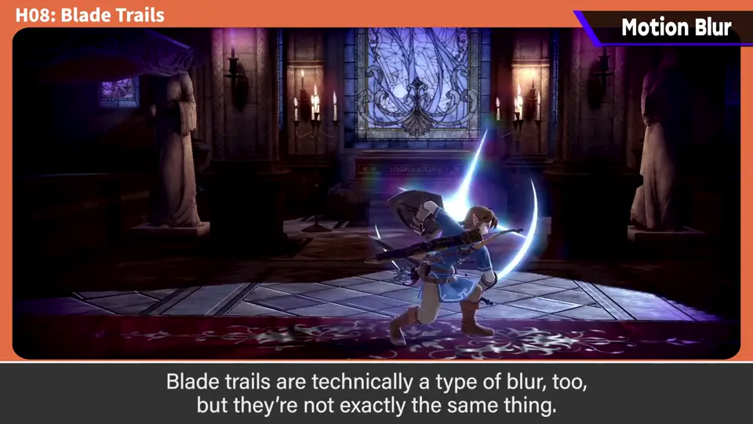
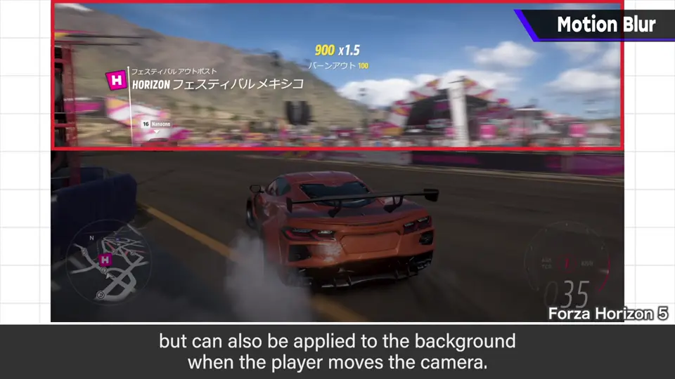
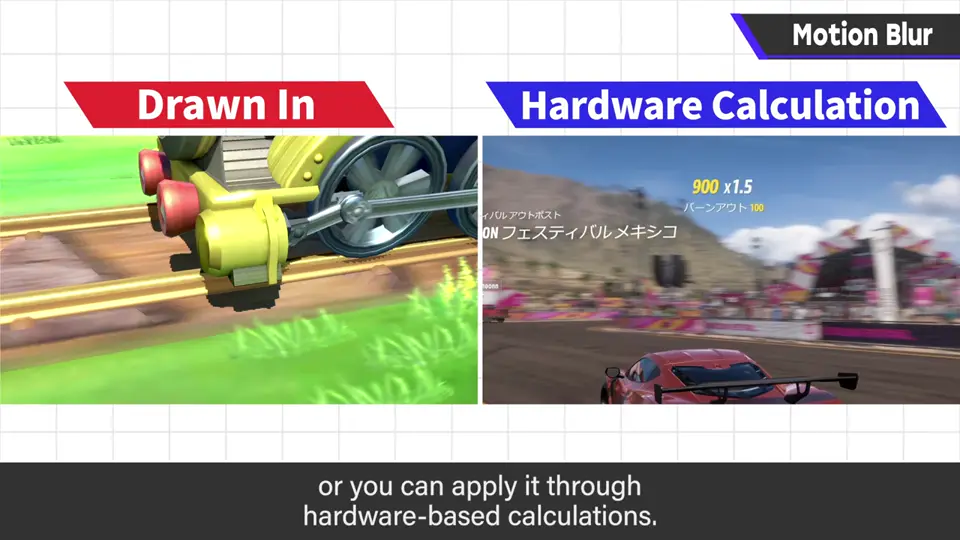
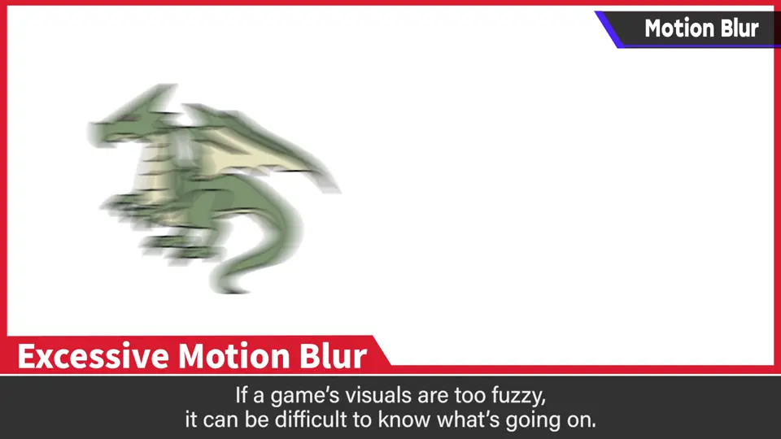
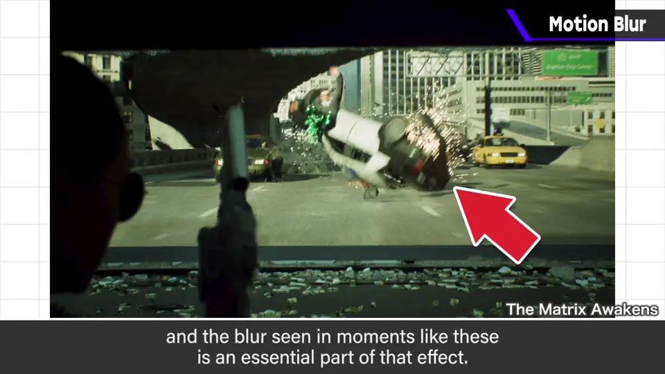

速览
这是《卡比的空气滑翔机》里的「轮子」能力，樱井每次看到都会想：当时做了就好了——那就是让中央星星旋转的模糊表现，只要在行驶时替换贴图就能表现。《大乱斗 特别版》的火车舞台，车轮和铁轨一开始就加了模糊，前进时看起来很自然。模糊是某物运动时的残影表现：例如有一帧和下一帧，模糊就是填补其间的表现，能减少逐帧感，有助于动感表现。刀光风切表现也算模糊，但性质稍有不同。模糊不一定只加在角色上，镜头移动时的背景等也会用。游戏里表现模糊，有像前面那样手绘的方法和用硬件计算的方法；不论哪种，都要小心别做过头：人为的模糊表现目前反而会加强违和感，游戏变得模糊也可能更难懂。员工之间也常意见分歧，不少作品有可调节模糊的选项，按喜好调就好。《黑客帝国》技术演示中能看到和电影难分辨的影像，这种影像中模糊不可或缺吧。理论上模糊越自然就越理所当然、违和感越少，期待技术发展。
1. 后悔没做的模糊 0:04
这是《卡比的空气滑翔机》里的「轮子」能力。樱井每次看到都会想：当时做了就好了。


《大乱斗 特别版》的火车舞台，车轮和铁轨一开始就加了模糊，前进时看起来很自然。
2. 什么是模糊 0:38
模糊，是某物运动时的残影表现。例如有一帧和下一帧，模糊就是填补其间的表现。



刀光风切的表现也算是模糊，但性质稍有不同。它不一定只加在角色上，镜头移动时的背景等也会用。


3. 手绘与硬件计算 1:24
游戏中表现模糊，有像前面那样手绘的方法，也有用硬件计算的方法。

4. 别做过头 1:34


员工之间也常意见分歧。不少作品有可调节模糊的选项，按喜好调就好。
《黑客帝国》的技术演示能看到和电影难以区分的影像，这种影像中模糊是不可或缺的吧。
理论上，模糊越自然，就越理所当然、违和感越少。期待技术的发展。
自测题
1. 什么是模糊（Blur）？有什么作用？
运动的残影表现，填补两帧之间，减少逐帧感，增加动感。 0:44
2. 游戏中表现模糊有哪两种方法？
手绘（如替换贴图）与硬件计算。 1:30
3. 模糊做过头会怎样？怎么应对？
反而违和、画面模糊难懂；可提供模糊调节选项让玩家按喜好调。 1:40